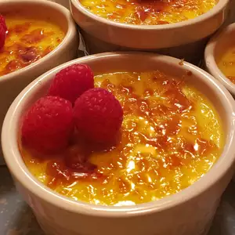

Creme Brulee

Description
Creme Brulee- the dessert of the most exquisite tastes. It will guarrantee that for whom you ever will make it, will etch this memory in his/her brain, for better, or for worse.
Ingredients
- 6 egg yolks
- 6 tablespoons white sugar, divided
- 1/2 teaspoon vanilla extract
- 2 1/2cups heavy cream
- 2 tablespoons brown sugar
Step by step, how to make:
- Preheat the oven to 300 degrees F (150 degrees C).
- Whisk egg yolks, 4 tablespoons white sugar, and vanilla extract in a mixing bowl until thick and creamy; set aside.
- Pour cream into a saucepan and stir over low heat until it almost comes to a boil. Whisk cream into egg yolk mixture; beat until combined.
- Pour mixture into the top pan of a double boiler. Stir over simmering water until mixture lightly coats the back of a spoon, about 3 minutes. Pour into a shallow heat-proof dish.
- Bake in the preheated oven until custard is set, about 30 minutes. Let cool to room temperature, then refrigerate until chilled, at least 1 hour or overnight.
- Turn the oven to broil.
- Combine remaining 2 tablespoons white sugar and brown sugar in a small bowl. Sprinkle mixture evenly over custard. Place dish under the broiler until sugar melts and caramelizes, about 2 minutes. Watch carefully so as not to burn.
- Allow to cool slightly, then refrigerate until custard is set again, about 10 minutes.
Go back